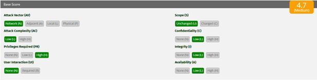

EVALUACIÓN DE VULNERABILIDADES CON CVSS V3.1
Actividad 17 | Equipo 02
01 Introducción
La evaluación de vulnerabilidades es una actividad esencial dentro de la gestión de riesgos, ya que permite traducir hallazgos técnicos en criterios claros de prioridad para la toma de decisiones. En ese proceso, el Common Vulnerability Scoring System versión 3.1 (CVSS v3.1) funciona como un marco estandarizado para describir la severidad de una vulnerabilidad mediante métricas comparables entre distintos productos, entornos y organizaciones. Su principal valor consiste en ofrecer una puntuación base reproducible y una representación compacta en forma de vector.
A diferencia de una valoración meramente intuitiva, CVSS v3.1 separa las características intrínsecas de la vulnerabilidad en tres grupos de métricas: Base, Temporal y Ambiental. Para esta actividad se trabaja principalmente con el grupo Base, porque el escenario proporciona la información necesaria para construir el vector y obtener la puntuación inicial. A partir de esa puntuación es posible interpretar la gravedad del caso, ubicarlo en una categoría cualitativa y justificar qué tan urgente debe ser su mitigación dentro de una organización.
02 Marco Teórico
2.1 CVSS v3.1 como marco de evaluación
CVSS es un marco abierto para comunicar las características y la severidad de vulnerabilidades de software, hardware y firmware. De acuerdo con la especificación oficial, su diseño se basa en tres grupos de métricas: Base, Temporal y Ambiental. El grupo Base refleja las cualidades intrínsecas de la vulnerabilidad y permanece constante en el tiempo y entre distintos entornos; el grupo Temporal ajusta la severidad conforme cambian factores como la disponibilidad de código de explotación; y el grupo Ambiental adapta la valoración al contexto específico de una organización.
La utilidad de CVSS no se limita a generar una cifra. También permite representar la evaluación mediante una cadena vector, que resume en formato compacto los valores asignados a cada métrica. Este enfoque facilita la comunicación técnica, la comparación entre vulnerabilidades y la priorización de acciones correctivas, especialmente cuando varias debilidades compiten por atención.
2.2 Métricas base utilizadas en la actividad
Attack Vector (AV): AV:N indica que la vulnerabilidad puede explotarse a través de la red, sin requerir acceso físico al equipo vulnerable.
Attack Complexity (AC): AC:L significa que la explotación no exige condiciones especiales o pasos excepcionales; el ataque es relativamente sencillo de ejecutar.
Privileges Required (PR): PR:H indica que el atacante necesita privilegios elevados antes de explotar la vulnerabilidad, lo que reduce la facilidad del ataque.
User Interaction (UI): UI:N señala que no se requiere interacción del usuario para que la explotación tenga éxito.
Scope (S): S:U indica que el impacto permanece dentro del mismo ámbito de seguridad del componente vulnerable, sin cruzar a una autoridad de seguridad distinta.
Confidentiality, Integrity and Availability (C/I/A): C:L, I:L y A:L representan impactos bajos sobre confidencialidad, integridad y disponibilidad, respectivamente.
2.3 Vector y escala cualitativa
La combinación de las métricas base produce una cadena vector, que en este caso queda expresada como CVSS:3.1/AV:N/AC:L/PR:H/UI:N/S:U/C:L/I:L/A:L. La especificación oficial establece que la puntuación base oscila entre 0 y 10, y que puede traducirse a una escala cualitativa: Low (0.1 - 3.9), Medium (4.0 - 6.9), High (7.0 - 8.9) y Critical (9.0 - 10.0). Esta clasificación es útil para priorizar la atención operativa, aunque siempre debe complementarse con el contexto organizacional.
03 Escenario de la Actividad
Una organización detecta una vulnerabilidad en un sistema web interno con las siguientes características:
- 1. Puede explotarse a través de la red.
- 2. La explotación requiere baja complejidad.
- 3. Se necesitan privilegios elevados.
- 4. No requiere interacción del usuario.
- 5. No cambia el alcance.
- 6. El impacto en Confidencialidad, Integridad y Disponibilidad es Bajo.
04 Construcción del Vector CVSS
Con base en las características del escenario y la justificación teórica, se construyó el siguiente vector evaluando cada métrica base:
01.1 Attack Vector (AV): Network (N)
La vulnerabilidad puede explotarse remotamente a través de la red, lo que significa que un atacante no necesita acceso físico ni estar en la red local adyacente para ejecutar el ataque.
01.2 Attack Complexity (AC): Low (L)
La explotación no exige condiciones especiales o pasos excepcionales de preparación; el ataque es relativamente directo y sencillo de ejecutar.
01.3 Privileges Required (PR): High (H)
El atacante necesita privilegios elevados (nivel administrador o similar) antes de poder explotar la vulnerabilidad, lo que reduce la facilidad de ejecución para usuarios comunes.
01.4 User Interaction (UI): None (N)
No se requiere interacción del usuario para que la explotación tenga éxito. El ataque se ejecuta de principio a fin sin que la víctima tenga que hacer clic o abrir archivos.
01.5 Scope (S): Unchanged (U)
El impacto permanece estrictamente dentro del mismo ámbito de seguridad del componente vulnerable, sin cruzar a una autoridad de seguridad distinta (no afecta a otros sistemas).
01.6 Impacto (C/I/A): Low (L)
Representan impactos bajos sobre confidencialidad (C:L), integridad (I:L) y disponibilidad (A:L). La explotación produce afectaciones limitadas sin comprometer completamente el sistema.
La Cadena/vector construida en base a esta información y confirmada con la calculadora oficial es la siguiente:
05 Interpretación Técnica y Puntuación
> Análisis Forense del Vector
A pesar de que la vulnerabilidad requiere privilegios elevados (PR:H), continúa siendo relevante porque puede explotarse remotamente a través de la red (AV:N) y con baja complejidad (AC:L), lo que significa que un atacante que ya haya obtenido acceso privilegiado mediante robo de credenciales, escalamiento previo o cuentas comprometidas podría explotarla fácilmente sin necesidad de interacción del usuario (UI:N).
Esto incrementa el riesgo dentro de entornos corporativos donde existen múltiples cuentas administrativas o donde un atacante ya logró una intrusión inicial. El tipo de atacante que podría explotarla corresponde principalmente a un actor con conocimientos técnicos intermedios o avanzados, como ciberdelincuentes organizados, insiders maliciosos o grupos APT que ya posean acceso privilegiado dentro de la infraestructura.
El hecho de que el alcance permanezca sin cambios (S:U) indica que la vulnerabilidad sólo afecta recursos dentro del mismo ámbito de seguridad comprometido y no permite expandir privilegios hacia otros dominios o sistemas externos. Finalmente, que el impacto en confidencialidad, integridad y disponibilidad sea bajo (C:L/I:L/A:L) significa que la explotación produce afectaciones limitadas: el atacante podría acceder parcialmente a información, modificar algunos datos o provocar pequeñas interrupciones del servicio, pero sin comprometer completamente el sistema ni generar daños críticos a la operación.
> Cálculo de Puntuación
A) ¿Cuál es la puntuación base?
La puntuación base, considerando la información proporcionada y verificada mediante la calculadora oficial CVSS v3.1 de la NVD/FIRST, arroja un score de 4.7.

Figura 1: Representación en Calculadora CVSS Oficial (NIST/FIRST)
B) ¿En qué categoría cae?
Considerando la métrica oficial:
• Baja (0.1 - 3.9)
• Media (4.0 – 6.9)
• Alta (7.0 – 8.9)
• Crítica (9.0 - 10.0)
El vector CVSS calculado (4.7) se clasifica en la categoría de criticidad MEDIA.
06 Conclusión y Reflexión Técnica
El uso de CVSS v3.1 en este escenario permite transformar una descripción técnica de la vulnerabilidad en un criterio de severidad claro y comparable. La construcción del vector mostró que, aunque el impacto sobre confidencialidad, integridad y disponibilidad es bajo, la explotación remota y la ausencia de interacción del usuario representan condiciones que siguen justificando atención prioritaria. El requisito de privilegios elevados reduce el potencial de explotación, pero no elimina el riesgo.
La puntuación base obtenida, 4.7, ubica la vulnerabilidad en la categoría Media, por lo que su corrección no debería postergarse indefinidamente, especialmente si afecta un sistema web interno con valor operativo para la organización. En términos de gestión, este resultado demuestra que CVSS no sólo sirve para clasificar vulnerabilidades, sino también para sustentar decisiones de mitigación con un lenguaje técnico estandarizado. Para una priorización más precisa, la valoración base debe complementarse con métricas temporales y ambientales que reflejen las condiciones reales del entorno.
07 Evidencia Multimedia
Material de apoyo referente al funcionamiento del cálculo de métricas en CVSS:
How to Calculate CVSS Score | Metrics Explained
08 Referencias Técnicas
FIRST.Org, Inc. (2026). Common Vulnerability Scoring System version 3.1 Specification Document. https://www.first.org/cvss/v3.1/specification-document
NIST. (08 de abril de 2026). National Vulnerability Database (NVD). https://www.nist.gov/programs-projects/national-vulnerability-database-nvd
NIST. (2026). CVSS v3 Calculator. https://nvd.nist.gov/vuln-metrics/cvss/v3-calculator